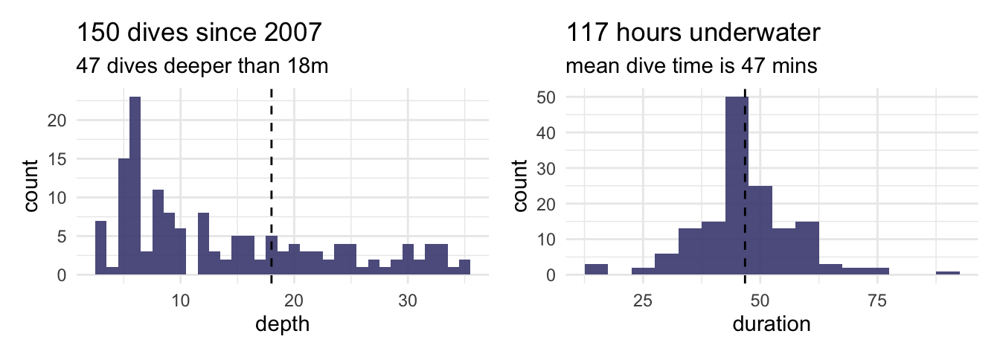
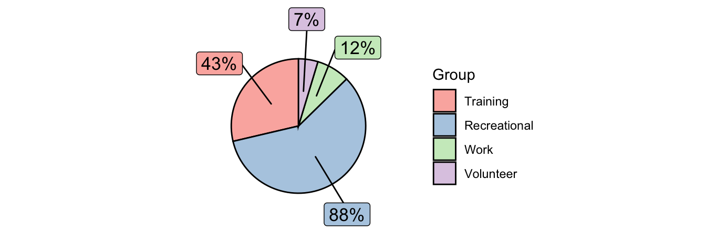

A record of recreational and scientific diving, usually on shipwrecks.
I am Alec
library(tidyverse)
library(patchwork)
library(leaflet)
library(sf)
library(gt)
library(DT)
library(dplyr)
library(ggrepel)
theme_set(theme_minimal())
dive_log <- read_csv("dive_log.csv") %>%
mutate(across(c(
category, entry, group, nitrox, night, water),
as_factor))
dive_log %>% mutate(depth_bins = cut(depth,
breaks=c(0,10,20,30, 40),
labels=c('< 10m', '10-20m',
'20-30m', '30-40m'))) %>%
group_by("depth range" = depth_bins) %>%
summarise(dives = n(),
hours = round(sum(duration)/60,1)) %>%
pivot_longer(-`depth range`, names_to = 'depth') %>%
pivot_wider(names_from = `depth range`) %>%
gt() %>% tab_options(table.width = pct(100)) %>%
fmt_number(
columns = 2:5,
rows = 1,
decimals = 0
)| depth | < 10m | 10-20m | 20-30m | 30-40m |
|---|---|---|---|---|
| dives | 72 | 37 | 28 | 13 |
| hours | 60 | 27.2 | 20.6 | 9 |
depth_hist <- ggplot(dive_log) +
geom_histogram(aes(depth), binwidth = 1,
fill = "#48497F", alpha = 0.9) +
geom_vline(xintercept = 18, lty=2) +
labs(
title = paste0(nrow(dive_log),
" dives since 2007"),
subtitle = paste0(sum(dive_log$depth > 18),
' dives deeper than 18m'))
time_hist <- ggplot(dive_log) +
geom_histogram(aes(duration), binwidth = 5,
fill = "#48497F", alpha = 0.9) +
geom_vline(xintercept = mean(dive_log$duration), lty=2) +
labs(
title = paste0(round(sum(dive_log$duration)/60),
" hours underwater"),
subtitle = paste0("mean dive time is ",
round(mean(dive_log$duration)), ' mins'))
depth_hist + time_hist
dive_log_training <- filter(dive_log, category == "Training")
dive_log_volunteer <- filter(dive_log, category == "Volunteer")
dive_log_work <- filter(dive_log, category == "Work")
dive_log_recreational <- filter(dive_log, category == "Recreational")
category_count <- dive_log %>%
group_by(category) %>%
summarise(total_count=n(), .groups = 'drop') %>%
as.data.frame()
# Get the positions
df2 <- category_count %>%
mutate(csum = rev(cumsum(rev(total_count))),
pos = total_count/2 + lead(csum, 1),
pos = if_else(is.na(pos), total_count/2, pos))
ggplot(category_count, aes(x = "" , y = total_count, fill = fct_inorder(category))) +
geom_col(width = 1, color = 1) +
coord_polar(theta = "y") +
scale_fill_brewer(palette = "Pastel1") +
geom_label_repel(data = df2,
aes(y = pos, label = paste0(total_count, "%")),
size = 4.5, nudge_x = 1, show.legend = FALSE) +
guides(fill = guide_legend(title = "Group")) +
theme_void()
map_labels <- paste0(dive_log$date, " ", dive_log$name)
dive_log %>%
st_as_sf(coords=c('lon', 'lat')) %>%
leaflet(options=leafletOptions(
minZoom = 3,
maxZoom = 10,
)) %>%
setView(lng = 115, lat = -26, zoom = 4) %>%
addProviderTiles(provider = providers$CartoDB.Voyager) %>%
addCircleMarkers(radius = 7, label = map_labels,
stroke = FALSE, fillOpacity = .7,
clusterOptions = markerClusterOptions(
maxClusterRadius=30,
spiderfyDistanceMultiplier=1.2))